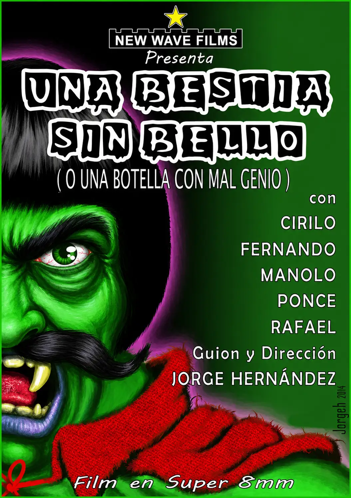

UNA BESTIA SIN BELLO
UNA BESTIA SIN BELLO Primer corto realizado por NEW WAVE FILMS, fue rodado íntegramente en exteriores durante la mañana del 23 de febrero de 1981. Todos los participantes estudiaban en el mismo instituto y no fue hasta el regreso a sus casas, horas después de finalizar el rodaje, cuando se enteraron del famoso y desafortunado acontecimiento nacional que tuvo lugar aquel mismo día.
La trama es sencilla. Dos excursionistas algo despistados, Manolo y Fernando, encuentran una misteriosa botellita dorada en el interior de una cueva y deciden llevársela consigo. Poco después, la botella comienza a emitir extraños sonidos y destellos luminosos, desencadenando una estrafalaria persecución por el campo por parte del insólito ser que habita en su interior.
Como suele ocurrir en muchas producciones amateur, algunas de las escenas más curiosas surgieron de manera completamente espontánea. El encontronazo entre Fernando y Ponce, el joven que pide fuego durante una secuencia, no estaba previsto y ocurrió realmente durante el rodaje. También resulta curioso que Rafael, pese a participar activamente en la realización de la película, prefiriera permanecer detrás de la cámara y ejercer únicamente labores de ayudante de dirección.